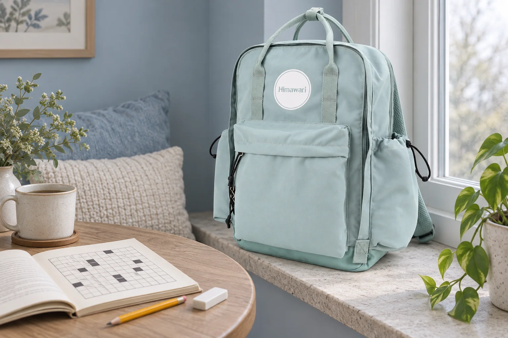

십자말풀이 책을 챙길 때: 확정한 글자와 후보를 다른 자리에

쉬는 시간에 퍼즐 몇 칸을 채우다가 일어나야 합니다. 내일 다시 펼쳤을 때 그 글자가 확실히 정한 답인지, 잠깐 떠올린 후보인지 기억나지 않을 수 있습니다. 책을 가방에 되담기 전 짧은 표시를 남겨보세요. 문제를 더 빨리 푸는 요령보다, 멈추기 전과 다시 펼친 뒤의 상태를 이어주는 정리입니다.
문제 번호와 후보를 칸 밖에 짝지어 쓰기
아직 정하지 못한 답은 풀이 칸에 바로 쓰기보다 여백이나 별도 메모에 단서 번호와 함께 적어보세요. 후보가 두 개라면 둘 다 후보임을 알아볼 수 있게 표시합니다. 여백이 좁거나 직접 쓰기 어려운 책이라면 별도 종이를 사용하고 해당 페이지도 함께 적습니다. 퍼즐에 따라 번호와 칸을 표시하는 방식은 다를 수 있으므로, 사용하는 책의 표기에 맞춰 적어두면 됩니다. 이 글은 특정 문제의 답을 제시하는 풀이법이 아닙니다.
작게 적은 글자도 다음에 읽을 수 있는 표시로
작은 글씨만으로 후보를 구별하면 시간이 지난 뒤 확정한 답으로 오해할 수 있습니다. ‘후보’라는 말이나 자신이 정한 표시를 같은 방식으로 사용하세요. 이미 칸에 적어 두었다면 어느 부분이 아직 확정되지 않았는지 메모에 남깁니다. 새 표시를 만들 때는 이전 표시의 뜻도 바꾸어 적어두는 편이 낫습니다. 사용한 책에 필기를 허용하는지 확인하고, 빌린 책이나 다른 사람의 책에는 소유자가 허용하지 않은 표시를 남기지 않습니다.
멈춘 순간에는 다음 단서 하나만 남기기
이어 볼 단서 번호를 하나 적고 책을 닫습니다. 반드시 풀어야 할 과제를 늘리기보다, 다시 펼쳤을 때 처음 볼 자리를 정하는 정도면 됩니다. 잠깐 떠올린 후보는 그 옆에 남겨둘 수 있지만 정답처럼 바꾸어 쓰지는 않습니다. 문제 페이지와 정답 페이지를 번갈아 보며 확인하는 방식이라면 어떤 페이지를 보고 있었는지도 구분하세요. 중단한 시점의 표시가 다음날 읽는 순서와 맞아야 짧은 쉬는 시간에도 같은 자리를 다시 찾을 수 있습니다.
책갈피와 필기구를 따로 되담기
페이지를 표시할 때는 책 안에 두꺼운 필통이나 연필을 끼운 채 닫지 않습니다. 얇은 책갈피를 쓰고, 사용한 필기구와 지우개는 따로 정리해 책을 다시 펼쳤을 때 떨어지지 않게 준비하세요. No.1089의 민트 본체와 원형 로고, 앞면 포켓은 사진의 실제 원본을 참고했습니다. 격자와 필기구는 곁에 놓은 소품입니다. 책과 케이스를 가방에 넣을 때는 함께 사용하는 상태의 크기와 닫힘을 확인하고, 외부 치수만으로 내부 수납을 판단하지 마세요.
참고·안내
- Himawari No.1089 제품 정보
- 실제 Himawari No.1089 원본과 제조사 카탈로그 외부 치수 29.5 × 42 × 12 cm를 참고한 AI 연출 사진입니다. 격자는 가상의 빈 소품이며 실제 문제나 정답, 책 수납의 실측 예시가 아닙니다.
자주 묻는 질문
후보를 풀이 칸에 작게 적어두면 충분할까요?
다음에 읽을 때 확정한 글자와 구별할 수 있는지 살펴보세요. 단서 번호와 함께 칸 밖이나 별도 메모에 남기면 후보의 위치와 뜻을 같이 확인할 수 있습니다.
중단할 때 풀지 못한 단서를 전부 적어야 하나요?
이어 볼 자리 하나부터 남겨도 됩니다. 다음에 펼쳤을 때 알아볼 수 있도록 페이지와 단서 번호, 표시의 뜻을 함께 적어보세요.